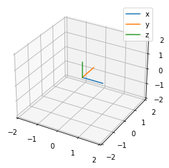
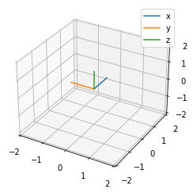
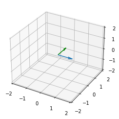
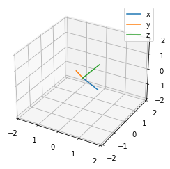

IMU与车辆¶

import numpy as np
import matplotlib.pyplot as plt
origin_point = np.array([0, 0, 0])
axes_3d = np.array([[1, 0, 0],
[0, 1, 0],
[0, 0, 1]])
def plot_axes3d(origin_point, axes_3d, ax):
labels = ['x', 'y', 'z']
for axis, label in zip(axes_3d, labels):
x, y, z = np.vstack((origin_point, axis)).T
ax.plot(x, y, z, label=label)
ax = plt.figure().add_subplot(projection='3d')
ax.set_xlim3d(-2, 2)
ax.set_ylim3d(-2, 2)
ax.set_zlim3d(-2, 2)
plot_axes3d(origin_point, axes_3d, ax)
plt.legend()
plt.show()

Consider a counter-clockwise rotation of 90 degrees about the z-axis.
from scipy.spatial.transform import Rotation as R
r = R.from_quat([0, 0, np.sin(np.pi/4), np.cos(np.pi/4)])
r_axes3d = r.apply(axes_3d)
ax = plt.figure().add_subplot(projection='3d')
ax.set_xlim3d(-2, 2)
ax.set_ylim3d(-2, 2)
ax.set_zlim3d(-2, 2)
plot_axes3d(origin_point, r_axes3d, ax)
plt.legend()
plt.show()

direction_3dvec = np.array([0, 1, 0])
inv_direction_3dvec = r.inv().apply(direction_3dvec)
inv_direction_3dvec.round()
array([1., 0., 0.])
ax = plt.figure().add_subplot(projection='3d')
ax.set_xlim3d(-2, 2)
ax.set_ylim3d(-2, 2)
ax.set_zlim3d(-2, 2)
ax.quiver(*origin_point, *direction_3dvec, length=1, color='g')
ax.quiver(*origin_point, *inv_direction_3dvec, length=1)
plt.show()

旋转向量¶
已知两个向量\(a,b\)，两者之间的位姿变化\(Ra=b\)，可通过旋转向量求出：
旋转角：\(\theta = \arccos(\frac{a \cdot b}{|a||b|})\)，根据 \(a \cdot b = |a| |b| \cos(\theta)\)
旋转轴：\(n = \frac{a \times b}{|a \times b|}\)
def align_two_vectors(a, b):
""" Get a rotation from a to b.
@a: array_like, shape (3)
@b: array_like, shape (3)
"""
theta = np.arccos(a @ b / (np.linalg.norm(a)*np.linalg.norm(b)))
cross_vector = np.cross(a, b)
norm = cross_vector / np.linalg.norm(cross_vector)
#print(np.rad2deg(theta).round(3), norm)
return theta * norm
rotvec = align_two_vectors(direction_3dvec, inv_direction_3dvec)
r = R.from_rotvec(rotvec)
r.apply(direction_3dvec).round(), inv_direction_3dvec.round()
(array([1., 0., 0.]), array([1., 0., 0.]))
车辆与IMU运动关系¶
施密特正交化¶
根据IMU静止时刻的加速度\(b_g\)构建Z轴：
w_x = np.array([1, 0, 0])
w_y = np.array([0, 1, 0])
w_z = np.array([0, 0, 1])
b_g = np.array([1.2, 2.4, 1.61])
b_z = b_g / np.linalg.norm(b_g)
np.linalg.norm(b_z)
0.9999999999999999
通过施密特正交化构建X轴：
b_x = w_x - w_x @ b_z * b_z
b_x = b_x / np.linalg.norm(b_x) # normalization
np.linalg.norm(b_x)
0.9999999999999999
通过XZ叉乘构建Y轴
b_y = np.cross(b_x, b_z)
b_y = b_y / np.linalg.norm(b_y) # normalization
np.linalg.norm(b_x)
0.9999999999999999
证明三个轴两两正交：
for v1, v2 in zip((b_x, b_y, b_z), (b_y, b_z, b_x)):
print((v1 @ v2).round(2))
0.0
0.0
0.0
IMU坐标系与世界坐标系¶
静止时，重力在世界坐标系下为\([0, 0, 1]^\mathsf{T}\)，在IMU坐标系下为\(b_g\)，设世界坐标系到IMU坐标系的旋转矩阵为\(R_{wb}\)，则：
\[\begin{split}
R_{wb}
\begin{bmatrix}
0\\
0\\
1
\end{bmatrix} = b_g
\end{split}\]
其中\(R_{wb}[:,0] = b_x\)，\(R_{wb}[:,1] = b_y\)，\(R_{wb}[:,2] = b_z\)。对应的，IMU坐标系到世界坐标系的旋转矩阵\(R_bw\)为：
\[
R_{bw} = R_{wb}^{-1} = R_{wb}^\mathsf{T}
\]
其中\(R_{bw}[0,:] = b_x\)，\(R_{bw}[1,:] = b_y\)，\(R_{bw}[2,:] = b_z\)。
IMU在世界坐标系下的姿态为\(R_{bw}\)
ax = plt.figure().add_subplot(projection='3d')
ax.set_xlim3d(-2, 2)
ax.set_ylim3d(-2, 2)
ax.set_zlim3d(-2, 2)
plot_axes3d(origin_point, np.vstack((b_x, b_y, b_z)), ax)
plt.legend()
plt.show()

标定车辆和IMU相对位姿¶
假设车辆朝正前方行驶，则正前方单位向量为\(c_x = [1, 0, 0]\)，若测得此时IMU的加速度为\(v^b\)，那么可以求得\(R_{bc} v^b = c_x\)。
v_b = np.array([2, 3, 4])
c_w = np.array([1, 0, 0])
R_bc = R.from_rotvec(align_two_vectors(v_b, c_w))
R_bc.apply(v_b / np.linalg.norm(v_b)).round()
array([1., 0., 0.])